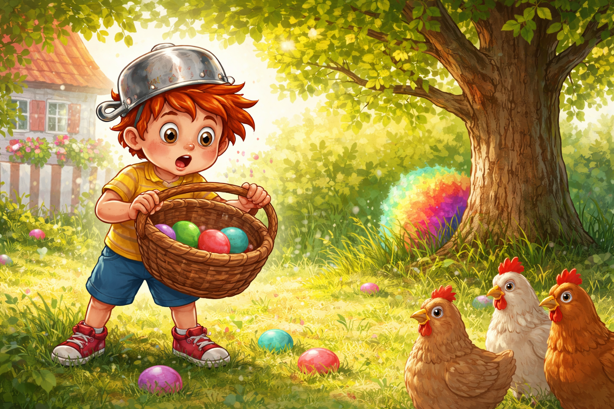
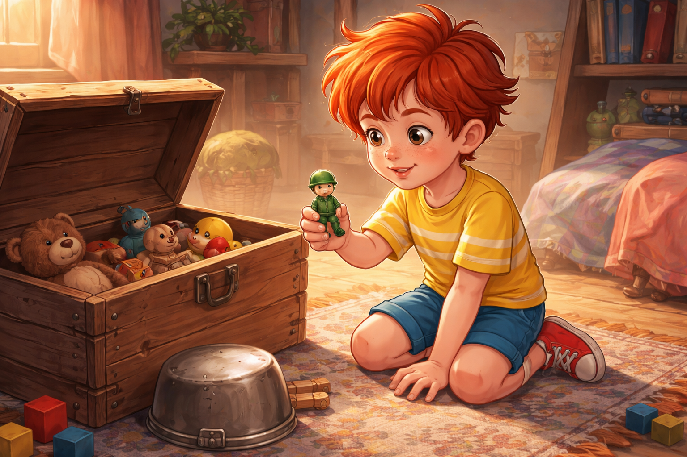
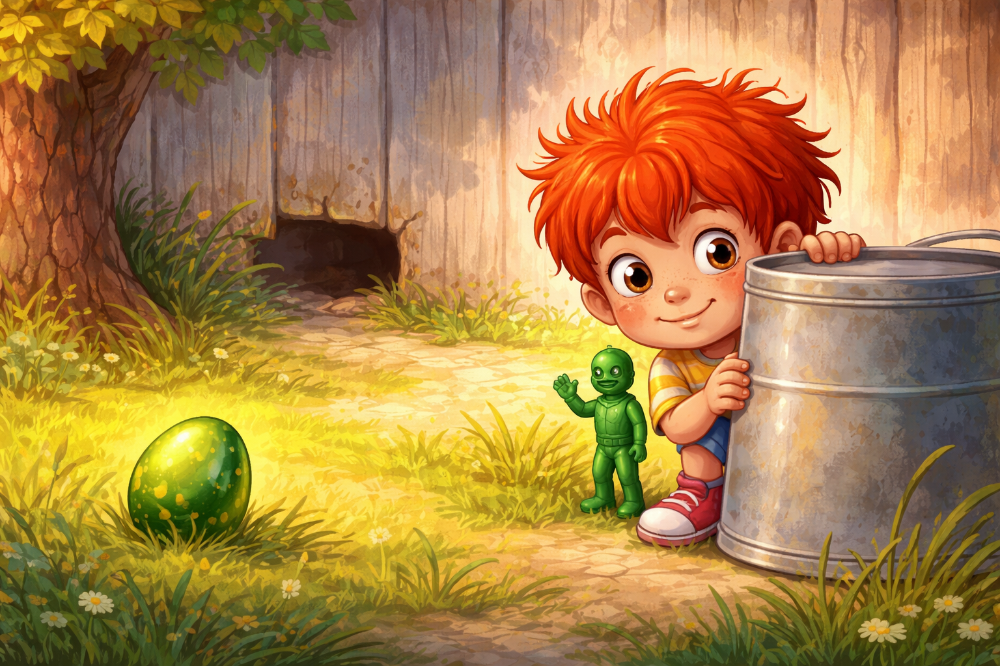
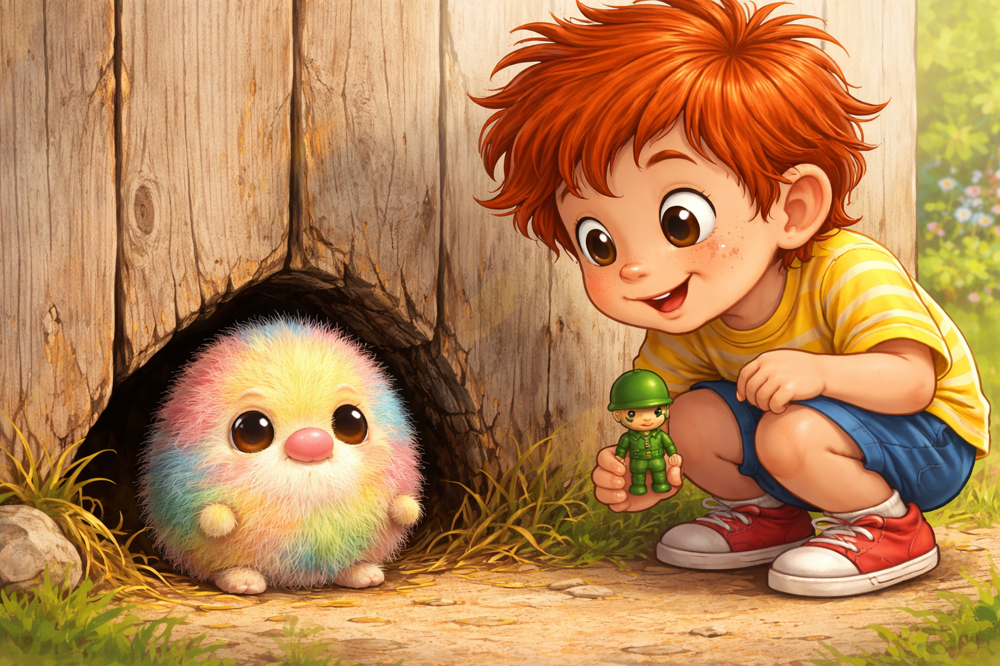
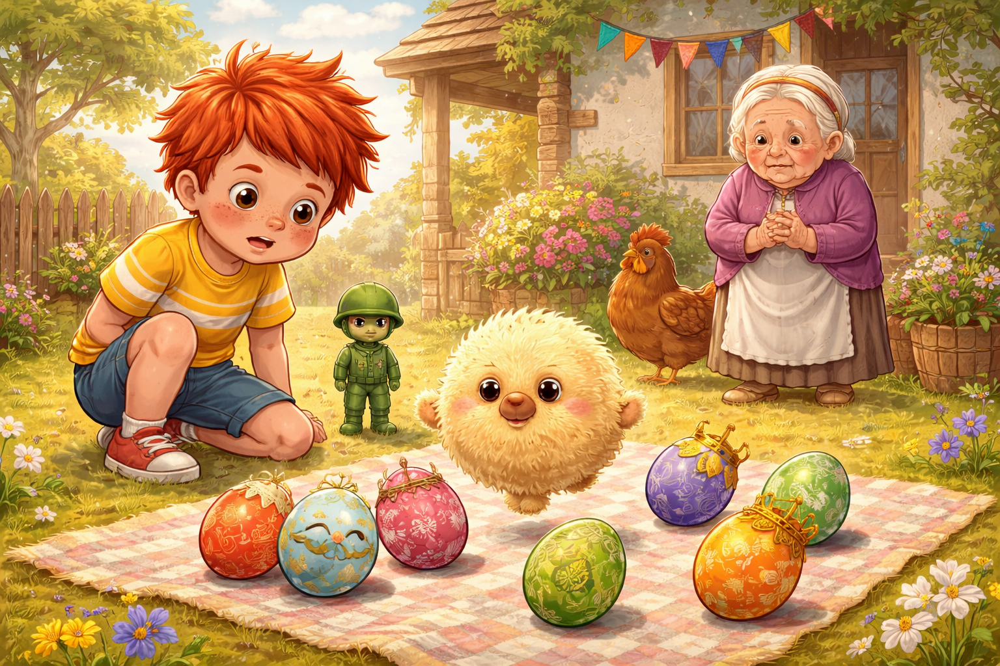
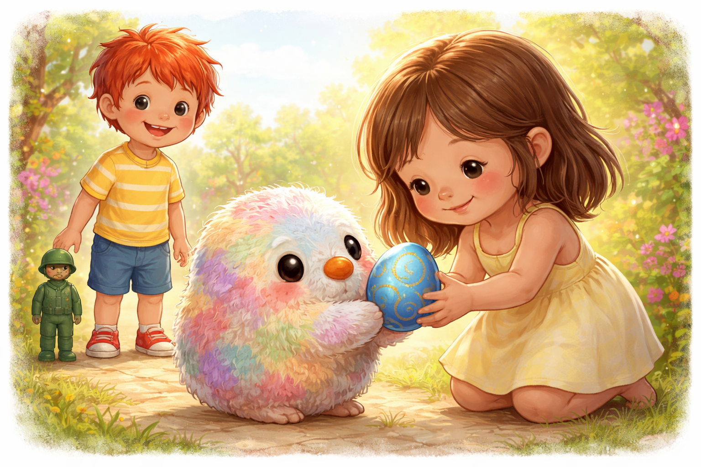
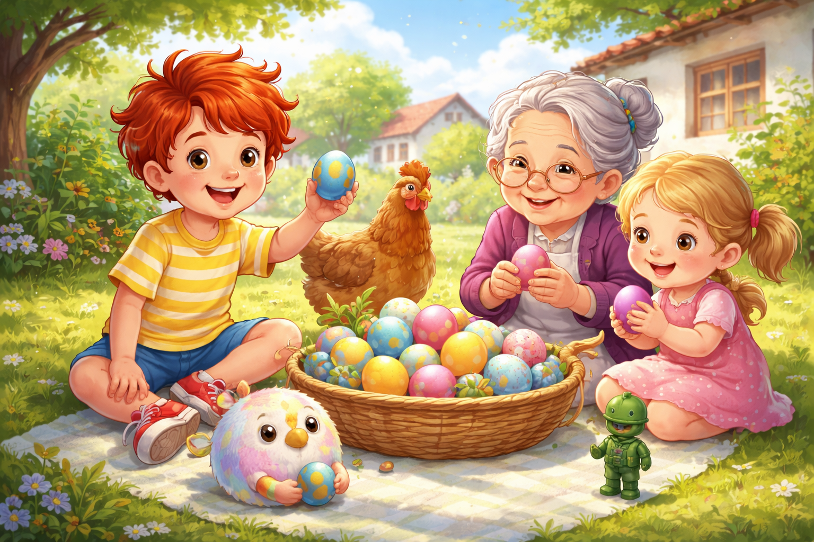
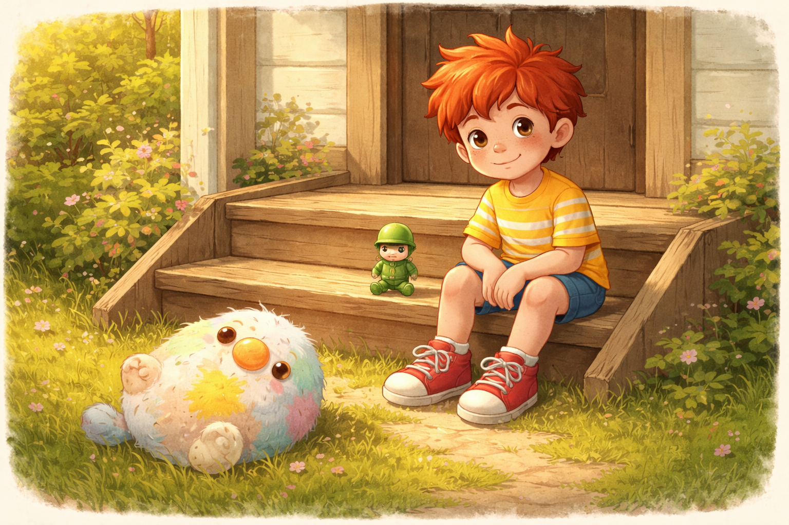

Палавко и крадецът на яйца
Здравей, аз съм Палавко. Пакостта ми понякога влиза първа през вратата, но сърцето ми винаги я догонва.
Днес ще ти разкажа как по Великден в двора на баба се появи един странен крадец на яйца. Той не крадеше от лошотия. Просто обичаше всичко, което блести, пука и прави "пук!".
А аз, разбира се, реших да го хвана.

Великден при баба миришеше на козунак, на боядисани яйца и на топло слънце. Старият часовник на стената тиктакаше важно, сякаш и той чакаше празника. В двора кокошките крачеха една след друга, все едно бяха на парад.
Баба беше наредила кошницата с яйцата на масата под асмата.
- Палавко, не бързай - каза тя. - Яйцата са за всички.
- Знам, бабо! - отвърнах аз и вече държах едно червено яйце. - Но първо трябва да проверим кое е шампионът.
Сложих си една тенджера на главата като шлем, взех кошницата и изтичах навън.
- Турнирът започва! - извиках аз.

В този миг едно зелено яйце изчезна от кошницата.
После едно жълто.
После синьото, което имах намерение да пазя за финала.
Аз замръзнах на място. До тревата профуча пухкаво петно и се мушна зад дървото.
- Това не беше вятър - прошепнах.

Оставих кошницата, изтичах в стаята и отворих старата ракла с играчки. Най-отгоре лежеше моят верен приятел Рико - малкият зелен пластмасов войник.
- Рико, имаме случай - казах важно. - Операция "Изчезналите яйца".
Рико, както винаги, изглеждаше готов за всичко. Поне аз така си го представях.
Сложих го в джоба си и двамата се върнахме в двора.

Поставихме едно лъскаво зелено яйце на тревата до дървото. Аз се скрих зад една кофа, а Рико застана до мен, мъничък, смел и много сериозен.
Първо се чу шумолене.
После тупур-тупур.
После едно тихо:
- Пук.

От дупката до плевнята се показа най-странното същество, което бях виждал. Беше малко и рошаво, почти кръгло, с шарена козина като яйце, боядисвано от пет първокласници едновременно. Носът му приличаше на картоф, а очите му бяха големи, топли и различни като две копчета от стара бабина кутия.
Съществото грабна яйцето, подскочи и се опита да се шмугне обратно.
- Хванахме те! - извиках аз.
То спря, погледна ме и се усмихна виновно.
- Не съм крадец - каза то. - Аз съм Пук. Официален щраквач на яйца, професор по пукване и таен великденски разбивач.
- А защо взимаш яйцата? - попитах аз.
- Защото иначе ще им стане скучно - отвърна Пук. - Яйцата са най-щастливи, когато някой ги пукне.
Погледнах Рико. Рико мълчеше, но съм почти сигурен, че и той не беше убеден.
- А хората? - попитах. - Те щастливи ли са, когато им изчезнат яйцата?
Пук се почеса по пухкавата глава.
- Не съм ги питал.

Тогава ми хрумна идея.
- Ще направим състезание - казах. - Но няма да печели този, който счупи най-много яйца. Ще печели този, който подари яйце и накара някого да се усмихне.
Пук примига.
- Това брои ли се за пукване?
- Брои се за по-хубаво пукване - казах аз. - Пукване на скуката.
Баба донесе още яйца. Някои бяха с очила от тел, други с мустаци от листенца, трети с корони от станиол. Кокошката Гери се приближи и ги огледа строго, сякаш проверяваше собствената си изложба.
Първо Пук скочи върху едно червено яйце.
Пук!
После върху едно жълто.
Пук!
После върху едно яйце с блестяща корона.
Пук!
Но никой не се засмя. Баба въздъхна. Гери наведе човка. Дори аз усетих, че нещо в играта не е наред.
Пук се смали, макар че си беше малък.
- Май не ги радвам - прошепна той.

Тогава в двора надникна малкото момиче от съседите. Пук взе едно синьо яйце със златна спирала, пристъпи към нея и го подаде с две лапички.
- Това е за теб - каза той тихо.
Момичето го пое и очите му светнаха.
- Прилича на комета! - каза тя.
И се усмихна.
Пук застина. После се усмихна толкова широко, че цялата му шарена козина сякаш засия.
- О! - каза той. - Това пукване е много по-хубаво.

След това всичко се промени. Пук подари яйце на баба. Аз подадох яйце на Рико, макар че то беше по-голямо от него. Баба даде едно на мен. Гери получи най-красивото яйце и закрачи гордо из двора.
Накрая всички чукнахме яйцата си. Някои се счупиха, други останаха здрави, но вече нямаше значение. Смяхме се, разменяхме си яйцата и измисляхме имена на най-шарените.

На следващата сутрин седях на стъпалата пред къщата. Рико беше до мен. Пук лежеше по гръб на тревата, целият щастлив и леко изцапан с жълтък.
- Догодина може ли да направим великденски театър с яйца? - попита той.
- Може - казах. - Но първо ще питаме яйцата на кого са.
Пук кимна сериозно.
- И после ще питаме хората дали искат да се усмихнат.
Така разбрах, че да счупиш нещо може да е забавно за миг. Но да споделиш, да разсмееш някого и да играете заедно - това остава много по-дълго.
А ако някога по Великден чуеш от двора тихо "пук", не бързай да се сърдиш.
Може би някой просто се учи как се подарява усмивка.